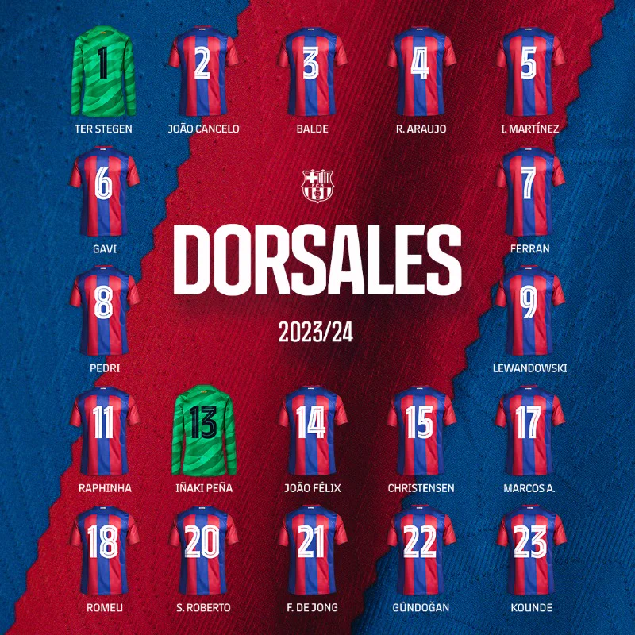

Empecé a ser aficionado del barça desde muy pequeño, mi padre era fan y se veia todos los partidos, aunque a mi no me gustaba el fútbol por lo que
no le hacia mucho caso, poco a poco comencé a vivir más este deporte, hasta llegar al punto en el que me veía hasta los partidos amistosos contra clubes
nadie conocía.
Cuándo Messi llegó al club, nadie sabía que acabaría llegando a lo que hoy en día es, podría decir que mi amor por este deporte debe esencialmente a el, y al que fue uno de sus grandes socios duran te su estancia en el FCB, Neymar.
El FCB llegaba a la champions de ese año como claro favorito, pues contaba con una de las mejores plantillas de europa, con grandes estrellas como: Messi, Luis suarez, Neymar, Xavi, Iniesta... Era el primer año con Luis Enrique en el banquillo después de sustiruir Gerardo Martino. Tras superar la fase de grupos, el barcelona se enfrentaba al Manchester City, a quien ganó tanto en la ida como en la vuelta, con un marcador global de 3-1 a favor de los culés. En el partido de cuartos el FCB se enfrentaria al PSG a quienes ganaron en ambos partidos con un global de 5-1. En la semifinal se enfrentaron al Bayern de munich, partido en el que Messi marcaría uno de sus mejores goles en el que dejaria por los suelos a Boateng, marcando un gol para la historia, la fase acabaria con un global de 5-3 favorable al FCB. En la final se lo jugaban todo contra la Juventus de Turín, Partido que ganarían por 1-3 con goles de Rakitik, Suarez y Neymar.

Defensas: Araujo, Iñigo Martínez, Christensen, Marcos Alonso, Koundé, Balde y Cancelo. Centrocampistas: Gavi, Pedri, Oriol Romeu, Sergi Roberto, De Jong, Gündogan y Fermín. Delanteros: Ferran, Lewandowski, Raphinha, Joao Félix y Lamine Yamal

Y esta es la tarea de mi compañero: